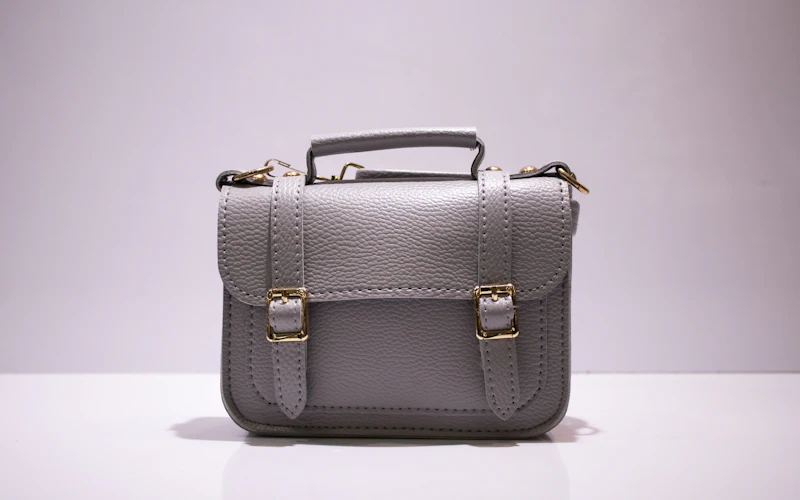

Buying guides
Simple, honest guides to help you choose bags, luggage, watches and what to pack.

Buying guide · 4 min read
20 inch trolley bag: size in cm, and is it allowed in the cabin?
A 20 inch trolley is 50.8 cm, but many sold as "20 inch" in India are 55 cm or taller. See airline limits, how much it holds and two bags that fit.
Read guide
Buying guide · 4 min read
24 inch trolley bag: size in cm, weight and how much you can pack
A 24 inch trolley is 61 cm, but most sold in India are 65–69 cm. See what 36 medium bags really measure and how much you can pack on a 15 kg fare.
Read guide
Buying guide · 4 min read
28 inch trolley bag: size in cm, and why most large bags go over the 158 cm limit
A 28 inch trolley is 71 cm, but most large bags in India are 75–80 cm. We checked 31 models: 26 are listed over the 158 cm airline limit. See the 5 that aren't.
Read guide
Buying guide · 3 min read
New Year gift ideas 2027: useful gifts for family, friends and travellers
Useful New Year gift ideas: watches for him and her, pair watches for parents, handbags and small travel gifts. Plus how to choose, and when to order.
Read guide
Buying guide · 3 min read
Amazon Republic Day Sale 2027: dates so far, and how to choose bags and watches
Amazon hasn't announced its 2027 Republic Day sale yet. Last year's began on 16 January. How to get ready, and what to check on bags and watches.
Read guide
Buying guide · 2 min read
Handbag, tote or sling: how to choose for work and travel
Tote, satchel or crossbody sling? Compare them for work and travel, see airline personal bag limits in India, and find picks for women and men.
Read guide
Buying guide · 2 min read
Which shoes to take on a trip: snow, sightseeing and the beach
Choose shoes by the trip: waterproof or water resistant, walking shoes for forts, sandals for the beach, plus sizing and packing tips, with picks for men and women.
Read guide
Buying guide · 3 min read
Sunscreen and skincare for trips: what to pack and what fits your cabin bag
The 100 ml rule, what SPF and PA mean, how much sunscreen a trip really needs, and travel-size sunscreen, lip balm and moisturiser picks.
Read guide
Buying guide · 2 min read
What to wear on a winter hill trip: thermals, jackets and layers
How to dress for Manali, Shimla or Kashmir in winter: three simple layers, which fabrics to choose, and thermal and jacket picks for men and women.
Read guide
Buying guide · 2 min read
What size luggage do you need? A simple guide by trip length
Cabin, medium or large? Match your trolley size to your trip, airline limits and how you travel, plus hard vs soft luggage.
Read guideBuying guide · 2 min read
Wedding gift ideas: watches and travel bags couples actually use
Pair watches for the couple, watches for the bride and groom, and bags for the honeymoon, with tips to pick the right one.
Read guideBuying guide · 4 min read
Cabin bag rules for Indian flights and how to pick the right trolley
The 7 kg and 115 cm rule explained, why "55 cm" bags can still be too big, and our cabin and check-in picks.
Read guide
Buying guide · 2 min read
How to choose your first analog watch
Dial size, strap type, water resistance and warranty in plain words, with picks for men and women.
Read guide
Buying guide · 3 min read
How to choose a laptop backpack for college or office
Laptop size, litres, comfort and monsoon protection explained simply, with our picks.
Read guide